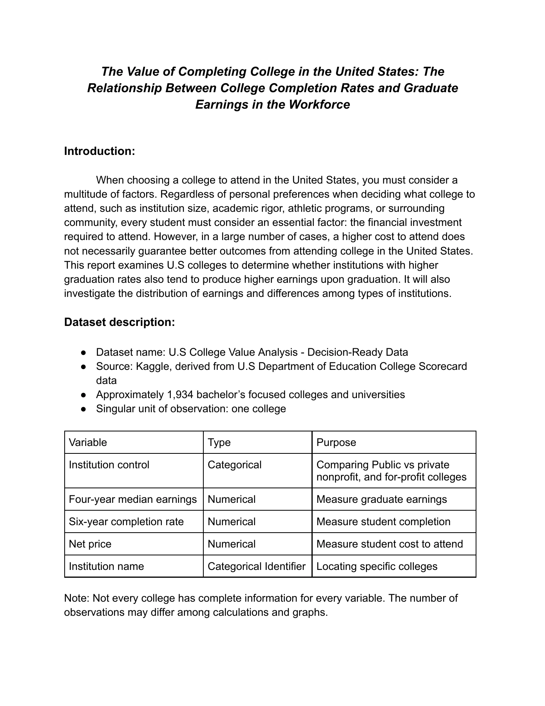
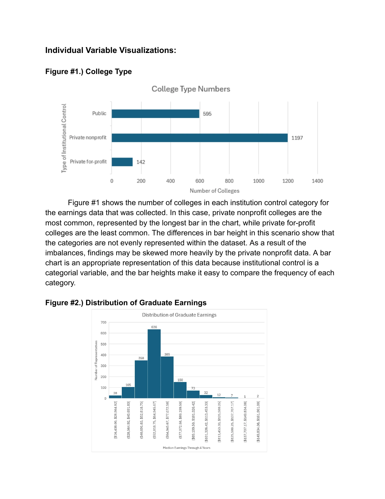
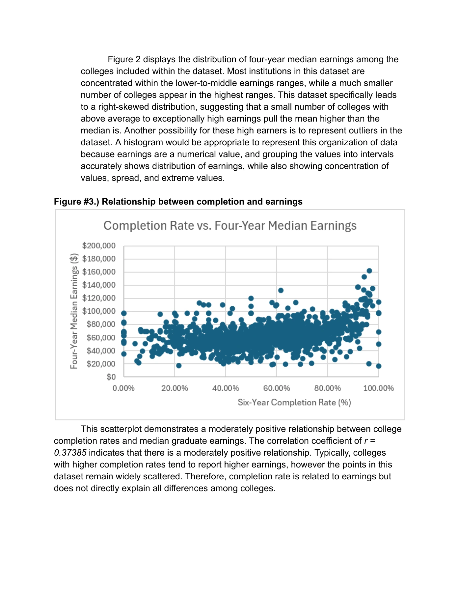
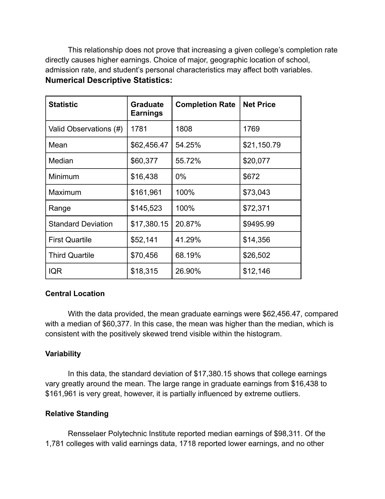
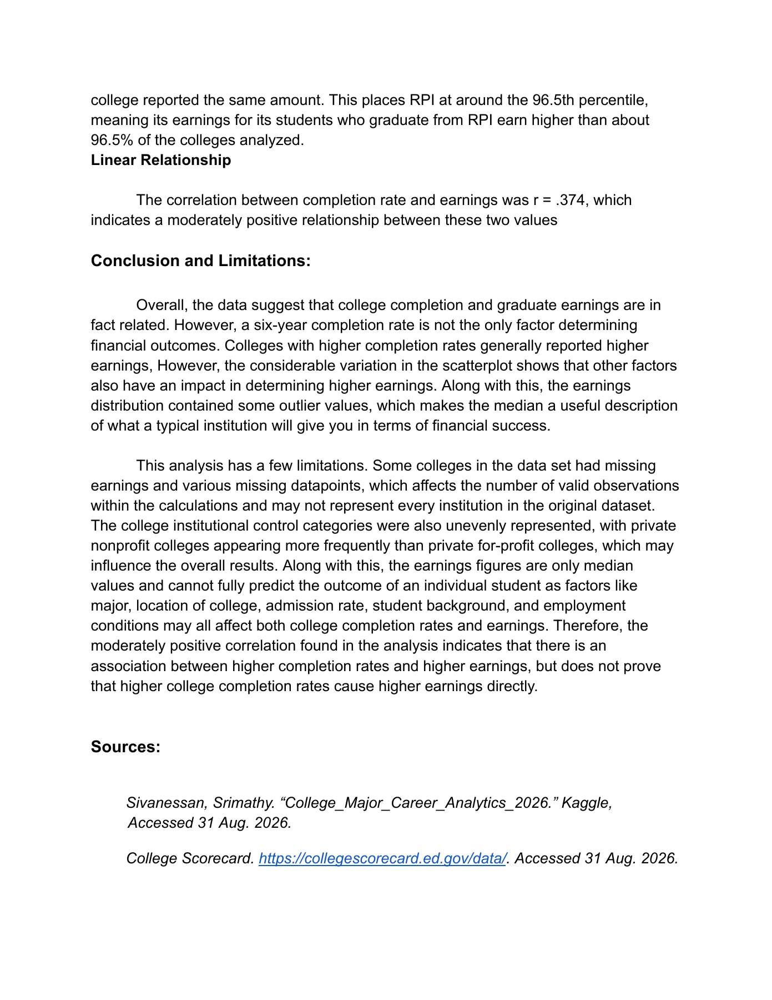

Logan Guild / Case studies
The Value of Completing College
5 pages. Read below without downloading. Select a page image to enlarge it.

Page 1 text
The Value of Completing College in the United States: The
Relationship Between College Completion Rates and Graduate
Earnings in the Workforce
Introduction:
When choosing a college to attend in the United States, you must consider a
multitude of factors. Regardless of personal preferences when deciding what college to
attend, such as institution size, academic rigor, athletic programs, or surrounding
community, every student must consider an essential factor: the financial investment
required to attend. However, in a large number of cases, a higher cost to attend does
not necessarily guarantee better outcomes from attending college in the United States.
This report examines U.S colleges to determine whether institutions with higher
graduation rates also tend to produce higher earnings upon graduation. It will also
investigate the distribution of earnings and differences among types of institutions.
Dataset description:
● Dataset name: U.S College Value Analysis - Decision-Ready Data
● Source: Kaggle, derived from U.S Department of Education College Scorecard
data
● Approximately 1,934 bachelor’s focused colleges and universities
● Singular unit of observation: one college
Variable Type Purpose
Institution control Categorical Comparing Public vs private
nonprofit, and for-profit colleges
Four-year median earnings Numerical Measure graduate earnings
Six-year completion rate Numerical Measure student completion
Net price Numerical Measure student cost to attend
Institution name Categorical Identifier Locating specific colleges
Note: Not every college has complete information for every variable. The number of
observations may differ among calculations and graphs.
Page 2 text
Individual Variable Visualizations:
Figure #1.) College Type
Figure #1 shows the number of colleges in each institution control category for
the earnings data that was collected. In this case, private nonprofit colleges are the
most common, represented by the longest bar in the chart, while private for-profit
colleges are the least common. The differences in bar height in this scenario show that
the categories are not evenly represented within the dataset. As a result of the
imbalances, findings may be skewed more heavily by the private nonprofit data. A bar
chart is an appropriate representation of this data because institutional control is a
categorial variable, and the bar heights make it easy to compare the frequency of each
category.
Figure #2.) Distribution of Graduate Earnings
Page 3 text
Figure 2 displays the distribution of four-year median earnings among the
colleges included within the dataset. Most institutions in this dataset are
concentrated within the lower-to-middle earnings ranges, while a much smaller
number of colleges appear in the highest ranges. This dataset specifically leads
to a right-skewed distribution, suggesting that a small number of colleges with
above average to exceptionally high earnings pull the mean higher than the
median is. Another possibility for these high earners is to represent outliers in the
dataset. A histogram would be appropriate to represent this organization of data
because earnings are a numerical value, and grouping the values into intervals
accurately shows distribution of earnings, while also showing concentration of
values, spread, and extreme values.
Figure #3.) Relationship between completion and earnings
This scatterplot demonstrates a moderately positive relationship between college
completion rates and median graduate earnings. The correlation coefficient of r =
0.37385 indicates that there is a moderately positive relationship. Typically, colleges
with higher completion rates tend to report higher earnings, however the points in this
dataset remain widely scattered. Therefore, completion rate is related to earnings but
does not directly explain all differences among colleges.
Page 4 text
This relationship does not prove that increasing a given college’s completion rate
directly causes higher earnings. Choice of major, geographic location of school,
admission rate, and student’s personal characteristics may affect both variables.
Numerical Descriptive Statistics:
Statistic Graduate Completion Rate Net Price
Earnings
Valid Observations (#) 1781 1808 1769
Mean $62,456.47 54.25% $21,150.79
Median $60,377 55.72% $20,077
Minimum $16,438 0% $672
Maximum $161,961 100% $73,043
Range $145,523 100% $72,371
Standard Deviation $17,380.15 20.87% $9495.99
First Quartile $52,141 41.29% $14,356
Third Quartile $70,456 68.19% $26,502
IQR $18,315 26.90% $12,146
Central Location
With the data provided, the mean graduate earnings were $62,456.47, compared
with a median of $60,377. In this case, the mean was higher than the median, which is
consistent with the positively skewed trend visible within the histogram.
Variability
In this data, the standard deviation of $17,380.15 shows that college earnings
vary greatly around the mean. The large range in graduate earnings from $16,438 to
$161,961 is very great, however, it is partially influenced by extreme outliers.
Relative Standing
Rensselaer Polytechnic Institute reported median earnings of $98,311. Of the
1,781 colleges with valid earnings data, 1718 reported lower earnings, and no other
Page 5 text
college reported the same amount. This places RPI at around the 96.5th percentile,
meaning its earnings for its students who graduate from RPI earn higher than about
96.5% of the colleges analyzed.
Linear Relationship
The correlation between completion rate and earnings was r = .374, which
indicates a moderately positive relationship between these two values
Conclusion and Limitations:
Overall, the data suggest that college completion and graduate earnings are in
fact related. However, a six-year completion rate is not the only factor determining
financial outcomes. Colleges with higher completion rates generally reported higher
earnings, However, the considerable variation in the scatterplot shows that other factors
also have an impact in determining higher earnings. Along with this, the earnings
distribution contained some outlier values, which makes the median a useful description
of what a typical institution will give you in terms of financial success.
This analysis has a few limitations. Some colleges in the data set had missing
earnings and various missing datapoints, which affects the number of valid observations
within the calculations and may not represent every institution in the original dataset.
The college institutional control categories were also unevenly represented, with private
nonprofit colleges appearing more frequently than private for-profit colleges, which may
influence the overall results. Along with this, the earnings figures are only median
values and cannot fully predict the outcome of an individual student as factors like
major, location of college, admission rate, student background, and employment
conditions may all affect both college completion rates and earnings. Therefore, the
moderately positive correlation found in the analysis indicates that there is an
association between higher completion rates and higher earnings, but does not prove
that higher college completion rates cause higher earnings directly.
Sources:
Sivanessan, Srimathy. “College_Major_Career_Analytics_2026.” Kaggle,
Accessed 31 Aug. 2026.
College Scorecard. https://collegescorecard.ed.gov/data/. Accessed 31 Aug. 2026.